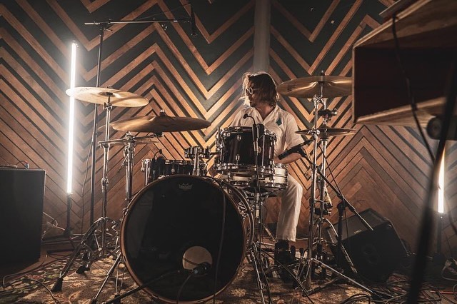
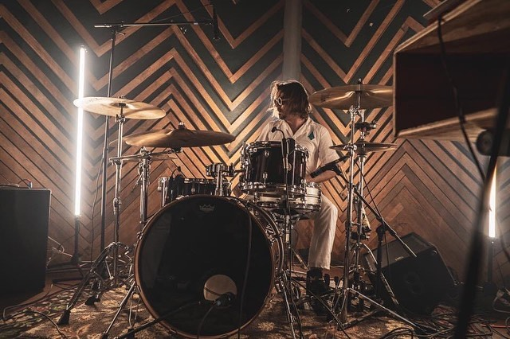

ASTRAL HAND is a 4-piece heavy-psych band that channels a deeply cosmic mood. By using synth-driven melodies, fuzzed-out guitar riffs, thundering drums, and lyrical themes meditating on interstellar deities, ASTRAL HAND searches for life and love in the universe at large.
Over the course of the past 2 years ASTRAL HAND has been carefully programming their very first transmission. After recording their debut album, Lords Of Data, with Shane Hochstettler of Howl Street Studios throughout early 2020, Al Kraemer, Victor Buell, Anthony Smith, and Dan Dahl have been patiently waiting in the shadows for their moment of action. After spending months in the musical purgatory caused by the Covid-19 pandemic (some might call it Hell), the time has come for the Lords of Data to step into the light.
Astral Hand is currently seeking label representation.
“Perhaps you feel the galaxy could stand a good smiting. Fair. Meet Astral Hand from Milwaukee. The band arrives as the result of a maybe-permanent teardown of their former outfit, Calliope, whose third and seemingly final album, Chapel Perilous, came out in 2018. Same dudes, new vibe, new name.”
- The Obelisk
"In ‘Navigator (debut single),’ repetitive, polyrhythmic percussion and guitar riffs are accompanied by smooth synth melodies and vocal harmonies that transport you to a time where travel between star-systems might be a part of everyday life.”
- It’s Psychedelic Baby Magazine


 
